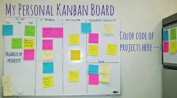
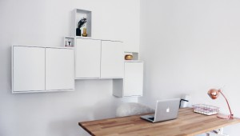
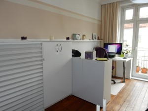
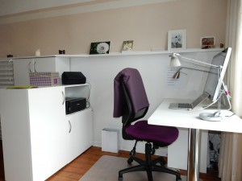
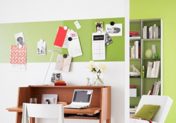

Weniger Papier, mehr Freiraum
Weniger Papier – mehr Freiraum mehr für kreative Büroeinrichtung
Nein, keine Bange. Diesmal geht es nicht um eine neue Software, die bei der Planung und Gestaltung des Arbeitsumfeldes oder der Büroorganisation helfen soll. Überhaupt „preise“ ich hier nichts an, was sich ein Freiberufler, ein Unternehmer oder ein Mensch mit Home Office anschaffen „muss“. Ganz im Gegenteil! Die allermeisten Büros sind heute technisch genau so ausgestattet, wie es sein sollte. Regelmäßige Updates inklusive. Das Problem ist häufig nur, dass diese wunderbare Ausstattung nicht optimal genutzt wird.
Besonders deutlich wird das beim Thema „Papierloses Büro“. Auch wenn ich diesbezüglich beinah missionarisch unterwegs bin, bin nicht der Ansicht, dass dieses Ziel in den nächsten Jahren bereits zu 100 Prozent realisiert werden könnte oder sollte. Denn ein von Hand geschriebener Dank auf schönem Papier oder eine außergewöhnliche Karte nach einem gelungenen Auftragsabschluss hat natürlich auch 2015 noch Stil – und hoffentlich darüber hinaus. Doch was ist mit dem täglichen Einerlei? Den Informationen, die eigentlich elektronisch so wunderbar abgespeichert sind? Und die dann doch „zur Sicherheit“ schnell noch mal ausgedruckt werden? Hier wird die vorhandene technische Ausstattung nicht nur nicht genutzt, sondern sträflich missachtet.
Hand aufs Herz: Wer hat ihn noch nicht betätigt, den „Print“-Button, wenn es um ein wichtiges Dokument ging – und wenn es eigentlich, streng genommen, gar nicht nötig gewesen wäre? Im Ausnahmefall ist das akzeptabel, wenn es zum Standard wird, ist dieses Verhalten kontraproduktiv. Die allermeisten Ausdrucke werden nie wieder gebraucht. Sie kosten nicht nur Material, Geld und Zeit, sie brauchen auch Platz. Auf dem Schreibtisch, in Akten, in Schränken.
Raus mit den hässlichen Büromöbeln
Drastisch ausgedrückt müllt nutzloses Papier nach und nach den Arbeitsplatz und die umliegenden Flächen zu. Dann wird der Schrei nach Ablagemöglichkeiten und „Stauraum“ laut. Wie schade! Die meisten Büros könnten doch viel besser aussehen und so viel kreativer genutzt werden. Hier schließt sich – siehe oben – der gedankliche Kreis. Wenn die technische Ausstattung richtig genutzt wird, spart sie Zeit, Geld und Platz. Das schafft die Möglichkeit, kreativ mit diesem Potenzial umzugehen und eine Arbeitsatmosphäre zu schaffen, in die man sich gern hinein begibt.

Ein gesunder Geist, so wussten schon die alten Griechen, fühlt sich in einem gesunden Körper am wohlsten. Auch heute fasst der Mensch in einem geordneten Umfeld die klarsten Gedanken. Wenn sich die Tagesaufgaben übersichtlich in einem Programm oder auf einer bunten Kanban-Wand präsentieren, lassen sie sich leichter bewältigen, als wenn man sie erst aus Stapeln von Papieren ausgraben muss.Raus also mit all den überflüssigen und meist hässlichen Aktenständern, Rollschränken und Regalen mit durchgehangenen Böden. Und rein mit einer Büroeinrichtung, die dem 21. Jahrhundert gerecht wird. Weil sie minimalistisch, kreativ, bezahlbar ist und zum Arbeiten, Produktiv- und Kreativsein geradezu einlädt.
Lassen Sie Ihrer Kreativität freien Lauf

Wie das funktionieren soll? Vielleicht, in dem man einfach mal um die Ecke denkt. Ich verstehe schon seit Jahren nicht, warum selbst neue Büros häufig in den gleichen Farben bzw. ohne Farben und immer den gleichen Möbelstücken eingerichtet werden. Die Verantwortlichen antworten auf die Frage, warum so eintönig, das sei eine Frage des Geldes. Ich sehe das anders. Man kann für wenig Geld schon sehr einladende und außergewöhnlich Büros gestalten. Man muss nur etwas kreativer sein. Es gibt noch sehr viele Möglichkeiten zwischen IKEA und Vitra. Für die Büroeinrichtung kann man sich – zum Beispiel – auch in der Küchenabteilung umsehen. Dort gibt es ganz schlichte Schrankelemente, die man nur auf ungewöhnliche Weise an die Wand bringen muss, um Platz und einen Hingucker zu haben. Allein eine unterschiedlich hohe Anbringung sorgt schon für etwas Auflockerung und ist ein Hingucker. Wie das Ganze dann dekoriert und vielleicht mit offenen Kastenelementen noch zeitgenössischer wird, das fällt ist ganz Ihrer Phantasie überlassen.Auch meine Office-Schränke sind ursprünglich Küchenhängeschränke, einfach mit anderen Türen und einer neuen Aufteilung umfunktioniert. Die Küchenschränke sind tief genug um alles Notwendige aufzunehmen. Da die neuen Drucker noch kleiner sind, ich ohnehin äußerst selten drucke, wird der nächste Drucker ganz im Schrank verschwinden.



Mit Farbe kann man Licht in einen Raum holen – oder sich eine originelle Fläche für Memos schaffen. Magnetfarbe ist dafür das Zauberwort. Es gibt sie in leuchtenden, fröhlichen Tönen und die kleinen Zettelchen und Bilder, die darauf festgemacht werden, scheinen darauf durch den Raum zu schweben. Schließlich kann man diese Farbe ja auch wie eine Welle über die Wand laufen lassen. Oder sie als Blume sprießen lassen oder das Logo des Unternehmens damit nachzeichnen oder, oder, oder.
Wer trotz eiserner Techno-Disziplin nicht ganz auf ein Regal verzichten kann oder will, könnte es mit einem besonders tiefen Modell versuchen. Das wird dann als Raumteiler eingesetzt und schirmt den Schreibtisch zum Beispiel von einer kleinen Sitzecke für Besucher oder einem Tisch für Mitarbeiterbesprechungen ab. Da tiefe Regale doppelt bestückt werden können, präsentieren sie sich zu jeder Seite hin unterschiedlich und erfüllen natürlich auch unterschiedliche Funktionen.
Haben Sie kreative Ideen fürs Office, die sich einfach selbst nachbauen oder gestalten lassen? Gern veröffentlichen wir diese hier.
Weitere Artikel

Puffer sichern Flow
Es wird allerhöchste Zeit, sich von der Idee, dass nur wer am Limit arbeitet, effizient sei, zu verabschieden. Unter Volllast, ganz ohne Puffer zu arbeiten ist eine „gute“ Voraussetzung für Unzuverlässigkeit, Fehler …

Die Kollaboration in einem internationalen Team organisieren
Für erfolgreiche Kollaboration im Team sind viele Bausteine nötig. Natürlich müssen alle das Ziel kennen, der Teamspirit muss stimmen, aber es muss auch die tägliche Zusammenarbeit im Team „flutschen“. Das heißt, die …